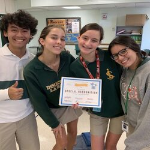
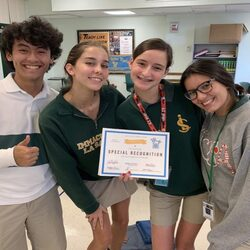

Portfolio



Growing up in a small town in Alaska, I have a natural love for community and the outdoors. Spending a lot of my life living in a small town where everybody knows everybody, taught me that creating close bonds with the people who live in your community can be an enriching and beautiful experience. Throughout my life I have found that my favorite things to do for work were helping others, and caring for children. The aspects from my childhood that I deeply appreciate are the things that inspire me in my career so far and in life.
My passion for helping and caring for others has led me to find fufilling work as an Academic Tutor for elementary school students. As a tutor my job is to provide the teacher and the students with additional academic assistance. Although this position is one that primarily focuses on academic support for students and helping the teacher with tasks inside the classroom, I also like to try and be someone students can confide in. Working inside the classrooms with the students and getting to know them, has allowed me to create relationships with each of the students.
A typical day in the classroom would involve asking the teacher what I can help with, then I will go from table to table to see if any of the students need any help. A lot of my work involves watching the lessons the teacher gives and then doing tasks for the teacher while I wait until a student needs help with the activity. When I have time I always try to check up on the students and see how they are doing outside of their academics, because I believe that academic support involves providing support in other areas. Children are able to excel when they have adults in their life that believe in them and bond with them. My favorite part of my Job is knowing that I am helping these students whether it is with their work or with problems outside of the classroom.
• Responsible for the safety of children for extended periods of time
• Required to cool meals, create activities, and engage children
• Experience with children from ages 6 months to 13 years old
• Responsible for checking out customers and taking orders
• Required to clean counters, floors, and restock inventory
• Prepared and took orders for customers
• Required to take inventory
• Responsible for providing a clean and safe environment for workers and customers